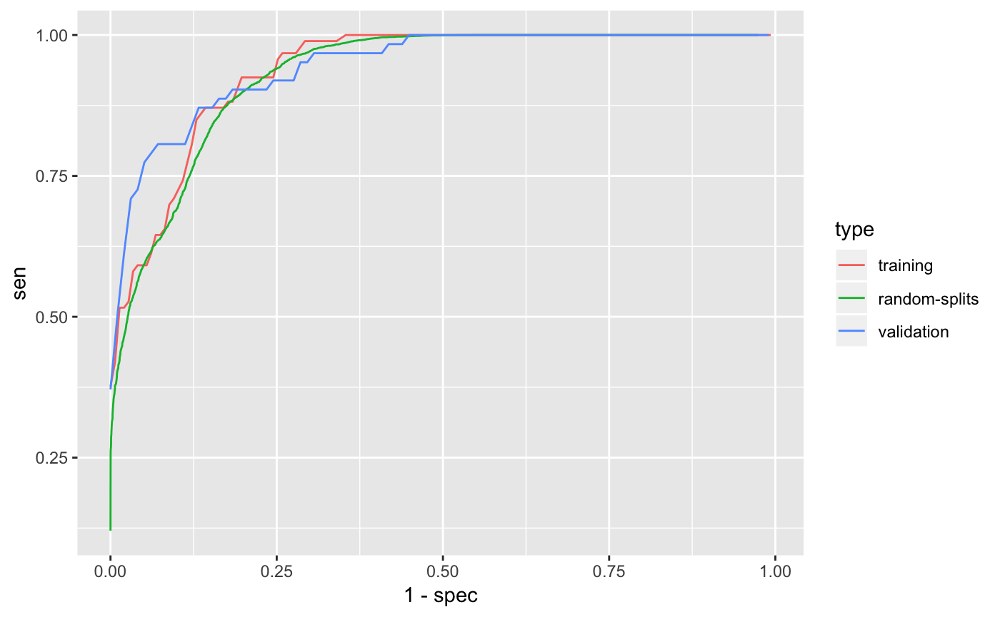

Generate simulated data.
latent <- rgamma(8000, 0.3)
latent2 <- rgamma(8000, 0.3)
ehr_data <- data.frame(
ICD1 = rpois(8000, 7 * (rgamma(8000, 0.2) + latent) / 0.5),
ICD2 = rpois(8000, 6 * (rgamma(8000, 0.8) + latent) / 1.1),
ICD3 = rpois(8000, 1 * rgamma(8000, 0.5 + latent2) / 0.5),
ICD4 = rpois(8000, 2 * rgamma(8000, 0.5) / 0.5),
NLP1 = rpois(8000, 8 * (rgamma(8000, 0.2) + latent) / 0.6),
NLP2 = rpois(8000, 2 * (rgamma(8000, 1.1) + latent) / 1.5),
NLP3 = rpois(8000, 5 * (rgamma(8000, 0.1) + latent) / 0.5),
NLP4 = rpois(8000, 11 * rgamma(8000, 1.9 + latent) / 1.9),
NLP5 = rpois(8000, 3 * rgamma(8000, 0.5 + latent2) / 0.5),
NLP6 = rpois(8000, 2 * rgamma(8000, 0.5) / 0.5),
NLP7 = rpois(8000, 1 * rgamma(8000, 0.5) / 0.5),
HU = rpois(8000, 30 * rgamma(8000, 0.1) / 0.1),
label = NA)
ii <- sample.int(8000, 400)
ehr_data[ii, "label"] <- with(
ehr_data[ii, ], rbinom(400, 1, plogis(
-5 + 1.5 * log1p(ICD1) + log1p(NLP1) +
0.8 * log1p(NLP3) - 0.5 * log1p(HU))))Define features and labels used for phenotyping.
## List of 7
## $ frame :'data.frame': 8000 obs. of 13 variables:
## ..$ ICD1 : int [1:8000] 2 5 17 0 0 4 8 0 9 2 ...
## ..$ ICD2 : int [1:8000] 11 11 10 5 5 11 5 4 10 5 ...
## ..$ ICD3 : int [1:8000] 3 3 0 0 1 4 2 1 0 1 ...
## ..$ ICD4 : int [1:8000] 0 1 2 0 0 0 0 1 0 0 ...
## ..$ NLP1 : int [1:8000] 0 5 20 0 0 13 26 0 8 5 ...
## ..$ NLP2 : int [1:8000] 2 0 2 0 3 2 0 3 3 4 ...
## ..$ NLP3 : int [1:8000] 2 1 16 0 7 3 18 0 8 2 ...
## ..$ NLP4 : int [1:8000] 2 11 10 15 6 4 19 15 21 4 ...
## ..$ NLP5 : int [1:8000] 1 5 0 3 31 2 0 11 0 13 ...
## ..$ NLP6 : int [1:8000] 7 0 0 3 0 3 0 0 3 0 ...
## ..$ NLP7 : int [1:8000] 0 0 2 7 3 0 2 1 0 0 ...
## ..$ HU : int [1:8000] 4 0 0 0 146 0 154 8 0 109 ...
## ..$ label: num [1:8000] NA NA NA 0 NA NA NA NA NA NA ...
## $ hu_feature : chr "HU"
## $ label : chr "label"
## $ patient_id :'data.frame': 8000 obs. of 0 variables
## $ training_set : int [1:240] 21 30 157 199 243 258 338 361 367 420 ...
## $ validation_set : int [1:160] 4 151 193 247 442 454 498 545 574 583 ...
## $ feature_transformation:function (x)
## - attr(*, "class")= chr "PhecapData"Specify the surrogate used for surrogate-assisted feature extraction (SAFE). The typical way is to specify a main ICD code, a main NLP CUI, as well as their combination. The default lower_cutoff is 1, and the default upper_cutoff is 10. In some cases one may want to define surrogate through lab test. Feel free to change the cutoffs based on domain knowledge.
surrogates <- list(
PhecapSurrogate(
variable_names = "ICD1",
lower_cutoff = 1, upper_cutoff = 10),
PhecapSurrogate(
variable_names = "NLP1",
lower_cutoff = 1, upper_cutoff = 10))Run surrogate-assisted feature extraction (SAFE) and show result.
## ICD1 NLP1
## NumCases 1985 1873
## NumControls 3086 3106
## Using surrogate ICD1
## Subsample 1/200
## Subsample 50/200
## Subsample 100/200
## Subsample 150/200
## Subsample 200/200
## Using surrogate NLP1
## Subsample 1/200
## Subsample 50/200
## Subsample 100/200
## Subsample 150/200
## Subsample 200/200## [1] "ICD1" "ICD2" "NLP1" "NLP2" "NLP3"
## attr(,"frequency")
## ICD1 ICD2 ICD3 ICD4 NLP1 NLP2 NLP3 NLP4 NLP5 NLP6
## 1.0000 0.9600 0.0375 0.0350 1.0000 0.6400 1.0000 0.2575 0.0225 0.0475
## NLP7 HU
## 0.0575 0.0550
## attr(,"class")
## [1] "PhecapFeatureExtraction"Train phenotyping model and show the fitted model, with the AUC on the training set as well as random splits.
## Split 1/200
## Split 50/200
## Split 100/200
## Split 150/200
## Split 200/200## List of 10
## $ coefficients : Named num [1:7] -4.841 1.692 1.319 -0.369 0 ...
## ..- attr(*, "names")= chr [1:7] "(Intercept)" "ICD1" "NLP1" "HU" ...
## $ method : chr "lasso_bic"
## $ fit_function :function (x, y, penalty_weight = NULL, ...)
## ..- attr(*, "srcref")= 'srcref' int [1:8] 37 18 63 1 18 1 59 85
## .. ..- attr(*, "srcfile")=Classes 'srcfilealias', 'srcfile' <environment: 0x7f8d41399ab8>
## $ predict_function:function (beta, x, ...)
## ..- attr(*, "srcref")= 'srcref' int [1:8] 66 19 72 1 19 1 88 94
## .. ..- attr(*, "srcfile")=Classes 'srcfilealias', 'srcfile' <environment: 0x7f8d41399ab8>
## $ train_roc :'data.frame': 999 obs. of 14 variables:
## ..$ cut : num [1:999] 0.001 0.002 0.003 0.004 0.005 0.006 0.007 0.008 0.009 0.01 ...
## ..$ pct : num [1:999] 0.996 0.979 0.963 0.95 0.942 ...
## ..$ acc : num [1:999] 0.392 0.408 0.425 0.438 0.446 ...
## ..$ tpr : num [1:999] 0.000823 0.000823 0.000823 0.000823 0.000823 ...
## ..$ fpr : num [1:999] 0.993 0.966 0.939 0.918 0.905 ...
## ..$ tnr : num [1:999] 0.0068 0.034 0.0612 0.0816 0.0952 ...
## ..$ ppv : num [1:999] 0.389 0.396 0.403 0.408 0.412 ...
## ..$ fdr : num [1:999] 0.611 0.604 0.597 0.592 0.588 ...
## ..$ npv : num [1:999] 1 1 1 1 1 1 1 1 1 1 ...
## ..$ sen : num [1:999] 1 1 1 1 1 1 1 1 1 1 ...
## ..$ spec: num [1:999] 0.0068 0.034 0.0612 0.0816 0.0952 ...
## ..$ prec: num [1:999] 0.389 0.396 0.403 0.408 0.412 ...
## ..$ rec : num [1:999] 1 1 1 1 1 1 1 1 1 1 ...
## ..$ f1 : num [1:999] 0.28 0.284 0.287 0.29 0.292 ...
## $ train_auc : num 0.936
## $ split_roc :'data.frame': 999 obs. of 14 variables:
## ..$ cut : num [1:999] 0.001 0.002 0.003 0.004 0.005 ...
## ..$ pct : num [1:999] 0.984 0.975 0.965 0.951 0.939 ...
## ..$ acc : num [1:999] 0.398 0.408 0.418 0.431 0.444 ...
## ..$ tpr : num [1:999] 0.00219 0.00219 0.00219 0.00219 0.00219 ...
## ..$ fpr : num [1:999] 0.974 0.959 0.942 0.921 0.9 ...
## ..$ tnr : num [1:999] 0.0259 0.041 0.0578 0.0794 0.0995 ...
## ..$ ppv : num [1:999] 0.389 0.393 0.397 0.402 0.408 ...
## ..$ fdr : num [1:999] 0.611 0.607 0.603 0.598 0.592 ...
## ..$ npv : num [1:999] 1 1 1 1 1 1 1 1 1 1 ...
## ..$ sen : num [1:999] 1 1 1 1 1 1 1 1 1 1 ...
## ..$ spec: num [1:999] 0.0259 0.041 0.0578 0.0794 0.0995 ...
## ..$ prec: num [1:999] 0.389 0.393 0.397 0.402 0.408 ...
## ..$ rec : num [1:999] 1 1 1 1 1 1 1 1 1 1 ...
## ..$ f1 : num [1:999] 0.279 0.281 0.283 0.286 0.289 ...
## $ split_auc : num 0.933
## $ surrogates :List of 2
## ..$ :List of 3
## .. ..$ variable_names: chr "ICD1"
## .. ..$ lower_cutoff : num 1
## .. ..$ upper_cutoff : num 10
## .. ..- attr(*, "class")= chr "PhecapSurrogate"
## ..$ :List of 3
## .. ..$ variable_names: chr "NLP1"
## .. ..$ lower_cutoff : num 1
## .. ..$ upper_cutoff : num 10
## .. ..- attr(*, "class")= chr "PhecapSurrogate"
## $ feature_selected: 'PhecapFeatureExtraction' chr [1:5] "ICD1" "ICD2" "NLP1" "NLP2" ...
## ..- attr(*, "frequency")= Named num [1:12] 1 0.96 0.0375 0.035 1 ...
## .. ..- attr(*, "names")= chr [1:12] "ICD1" "ICD2" "ICD3" "ICD4" ...
## - attr(*, "class")= chr "PhecapModel"Validate phenotyping model using validation label, and show the AUC and ROC.
## List of 8
## $ coefficients: Named num [1:7] -4.841 1.692 1.319 -0.369 0 ...
## ..- attr(*, "names")= chr [1:7] "(Intercept)" "ICD1" "NLP1" "HU" ...
## $ method : chr "lasso_bic"
## $ train_roc :'data.frame': 999 obs. of 14 variables:
## ..$ cut : num [1:999] 0.001 0.002 0.003 0.004 0.005 0.006 0.007 0.008 0.009 0.01 ...
## ..$ pct : num [1:999] 0.996 0.979 0.963 0.95 0.942 ...
## ..$ acc : num [1:999] 0.392 0.408 0.425 0.438 0.446 ...
## ..$ tpr : num [1:999] 0.000823 0.000823 0.000823 0.000823 0.000823 ...
## ..$ fpr : num [1:999] 0.993 0.966 0.939 0.918 0.905 ...
## ..$ tnr : num [1:999] 0.0068 0.034 0.0612 0.0816 0.0952 ...
## ..$ ppv : num [1:999] 0.389 0.396 0.403 0.408 0.412 ...
## ..$ fdr : num [1:999] 0.611 0.604 0.597 0.592 0.588 ...
## ..$ npv : num [1:999] 1 1 1 1 1 1 1 1 1 1 ...
## ..$ sen : num [1:999] 1 1 1 1 1 1 1 1 1 1 ...
## ..$ spec: num [1:999] 0.0068 0.034 0.0612 0.0816 0.0952 ...
## ..$ prec: num [1:999] 0.389 0.396 0.403 0.408 0.412 ...
## ..$ rec : num [1:999] 1 1 1 1 1 1 1 1 1 1 ...
## ..$ f1 : num [1:999] 0.28 0.284 0.287 0.29 0.292 ...
## $ train_auc : num 0.936
## $ split_roc :'data.frame': 999 obs. of 14 variables:
## ..$ cut : num [1:999] 0.001 0.002 0.003 0.004 0.005 ...
## ..$ pct : num [1:999] 0.984 0.975 0.965 0.951 0.939 ...
## ..$ acc : num [1:999] 0.398 0.408 0.418 0.431 0.444 ...
## ..$ tpr : num [1:999] 0.00219 0.00219 0.00219 0.00219 0.00219 ...
## ..$ fpr : num [1:999] 0.974 0.959 0.942 0.921 0.9 ...
## ..$ tnr : num [1:999] 0.0259 0.041 0.0578 0.0794 0.0995 ...
## ..$ ppv : num [1:999] 0.389 0.393 0.397 0.402 0.408 ...
## ..$ fdr : num [1:999] 0.611 0.607 0.603 0.598 0.592 ...
## ..$ npv : num [1:999] 1 1 1 1 1 1 1 1 1 1 ...
## ..$ sen : num [1:999] 1 1 1 1 1 1 1 1 1 1 ...
## ..$ spec: num [1:999] 0.0259 0.041 0.0578 0.0794 0.0995 ...
## ..$ prec: num [1:999] 0.389 0.393 0.397 0.402 0.408 ...
## ..$ rec : num [1:999] 1 1 1 1 1 1 1 1 1 1 ...
## ..$ f1 : num [1:999] 0.279 0.281 0.283 0.286 0.289 ...
## $ split_auc : num 0.933
## $ valid_roc :'data.frame': 999 obs. of 14 variables:
## ..$ cut : num [1:999] 0.001 0.002 0.003 0.004 0.005 0.006 0.007 0.008 0.009 0.01 ...
## ..$ pct : num [1:999] 0.994 0.988 0.981 0.963 0.95 ...
## ..$ acc : num [1:999] 0.394 0.4 0.406 0.425 0.438 ...
## ..$ tpr : num [1:999] 0.0019 0.0019 0.0019 0.0019 0.0019 ...
## ..$ fpr : num [1:999] 0.99 0.98 0.969 0.939 0.918 ...
## ..$ tnr : num [1:999] 0.0102 0.0204 0.0306 0.0612 0.0816 ...
## ..$ ppv : num [1:999] 0.39 0.392 0.395 0.403 0.408 ...
## ..$ fdr : num [1:999] 0.61 0.608 0.605 0.597 0.592 ...
## ..$ npv : num [1:999] 1 1 1 1 1 1 1 1 1 1 ...
## ..$ sen : num [1:999] 1 1 1 1 1 1 1 1 1 1 ...
## ..$ spec: num [1:999] 0.0102 0.0204 0.0306 0.0612 0.0816 ...
## ..$ prec: num [1:999] 0.39 0.392 0.395 0.403 0.408 ...
## ..$ rec : num [1:999] 1 1 1 1 1 1 1 1 1 1 ...
## ..$ f1 : num [1:999] 0.281 0.282 0.283 0.287 0.29 ...
## $ valid_auc : num 0.942
## - attr(*, "class")= chr "PhecapValidation"
Apply the model to all the patients to obtain predicted phenotype.
## 'data.frame': 8000 obs. of 1 variable:
## $ prediction: num 0.02719 0.63493 0.98312 0.00783 0.00125 ...